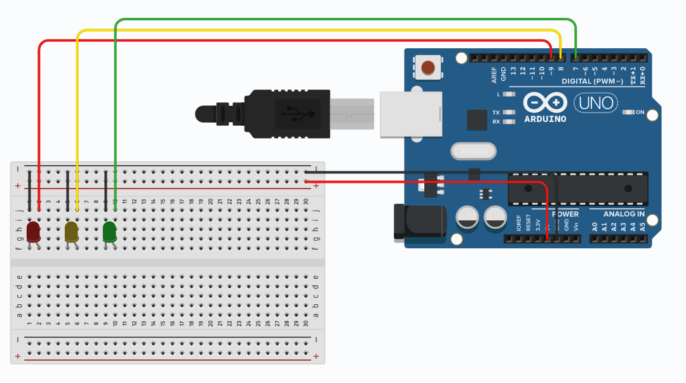
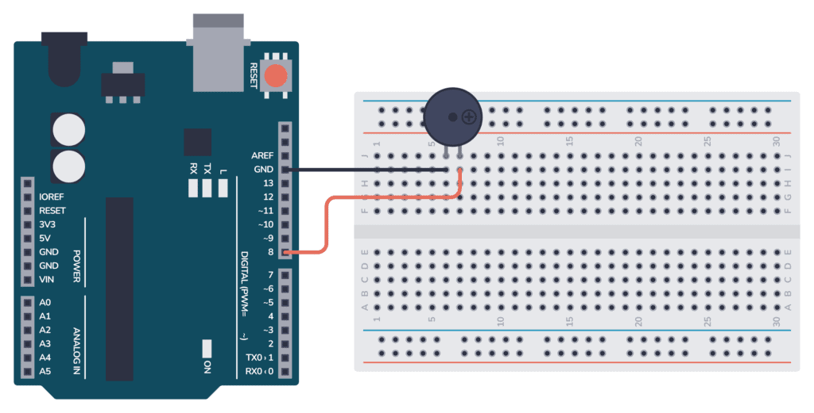
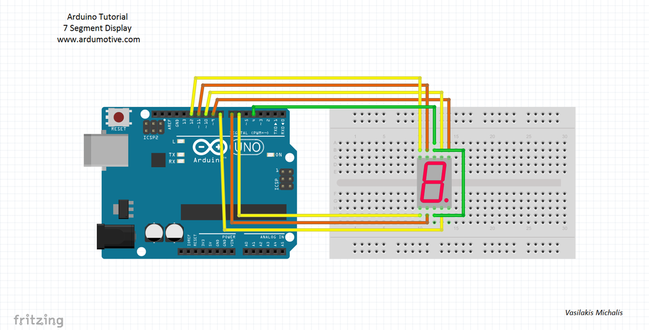
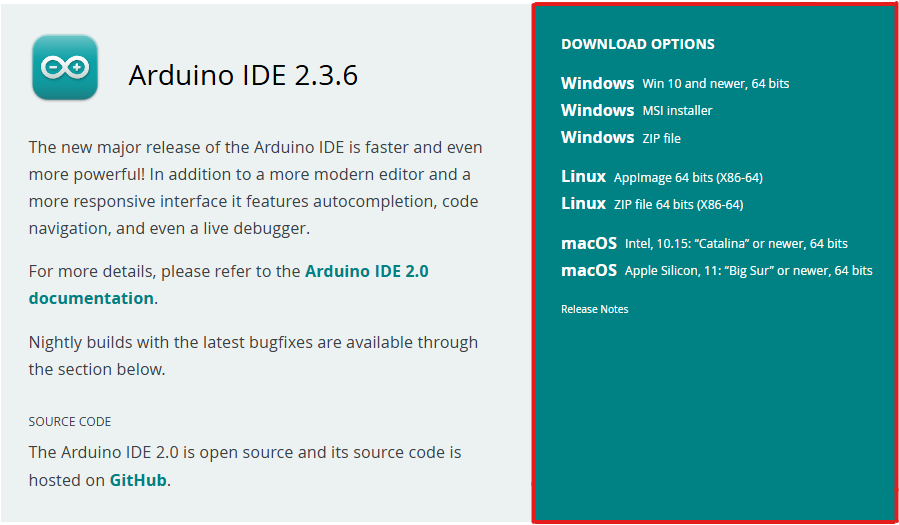

ARDUINO PROJECT TUTORIALS
How to Make a Stop Light with Arduino
Step 1: Gather Your Materials
You'll need an Arduino Uno, red/yellow/green LEDs, 220Ω resistors, jumper wires, and a breadboard.
Step 2: Set Up the LEDs
Connect the LEDs to pins 8, 9, and 10. Use resistors to avoid burning them out.
Step 3: Upload the Code
void setup() {
pinMode(8, OUTPUT); // Red
pinMode(9, OUTPUT); // Yellow
pinMode(10, OUTPUT); // Green
}
void loop() {
digitalWrite(10, HIGH); delay(3000); // Green
digitalWrite(10, LOW); digitalWrite(9, HIGH); delay(1000); // Yellow
digitalWrite(9, LOW); digitalWrite(8, HIGH); delay(3000); // Red
digitalWrite(8, LOW);
}
How to Use a Buzzer with Arduino
Step 1: Gather Your Materials
You'll need an Arduino Uno, a piezo buzzer, jumper wires, and a breadboard.
Step 2: Connect the Buzzer
Connect the positive leg of the buzzer to pin 8 and the negative leg to ground.
Step 3: Upload the Code
void setup() {
pinMode(8, OUTPUT);
}
void loop() {
tone(8, 1000); // 1kHz tone
delay(500);
noTone(8);
delay(500);
}
How to Use an LCD with Arduino
Step 1: Gather Your Materials
You'll need an Arduino Uno, an I2C 16x2 LCD, jumper wires, and optionally a breadboard.
Step 2: Connect the LCD
Connect the LCD VCC to 5V, GND to GND, SDA to A4, and SCL to A5.

Step 3: Upload the Code
Make sure you have the LiquidCrystal_I2C library installed in the Arduino IDE.
#include <Wire.h>
#include <LiquidCrystal_I2C.h>
LiquidCrystal_I2C lcd(0x27, 16, 2); // Adjust address if needed
void setup() {
lcd.begin();
lcd.backlight();
lcd.setCursor(0, 0);
lcd.print("Hello, world!");
}
void loop() {
// No looping code needed for this example
}
How to Use a 7-Segment Display with Arduino
Step 1: Gather Your Materials
You'll need an Arduino Uno, a 1-digit common cathode 7-segment display, 220Ω resistors (x7), jumper wires, and a breadboard.
Step 2: Connect the 7-Segment Display
Connect the segments to digital pins 2–8 on the Arduino through resistors. Connect the common cathode pins to GND.
Step 3: Upload the Code
// Segment pins: A, B, C, D, E, F, G
int segmentPins[] = {2, 3, 4, 5, 6, 7, 8};
// Digit patterns for 0-9
byte digits[10][7] = {
{1,1,1,1,1,1,0}, // 0
{0,1,1,0,0,0,0}, // 1
{1,1,0,1,1,0,1}, // 2
{1,1,1,1,0,0,1}, // 3
{0,1,1,0,0,1,1}, // 4
{1,0,1,1,0,1,1}, // 5
{1,0,1,1,1,1,1}, // 6
{1,1,1,0,0,0,0}, // 7
{1,1,1,1,1,1,1}, // 8
{1,1,1,1,0,1,1} // 9
};
void setup() {
for (int i = 0; i < 7; i++) {
pinMode(segmentPins[i], OUTPUT);
}
}
void loop() {
for (int num = 0; num < 10; num++) {
for (int i = 0; i < 7; i++) {
digitalWrite(segmentPins[i], digits[num][i]);
}
delay(1000); // Show digit for 1 second
}
}
How to Install the Arduino IDE
Step 1: Go to the Official Website
Visit the official Arduino software page: arduino.cc/en/software.
Step 2: Choose Your Operating System
Select your OS (Windows, Mac, or Linux). For Windows, you can choose "Windows Installer" or "Windows ZIP file".
Step 3: Download and Install
Windows
1. Download the latest release
2. Double-click the executable (.exe) file.
3. Follow the instructions in the installation guide.
4. When completing the setup, leave Run Arduino IDE ticked to launch the application, or launch it later from the Start Menu.
MacOS
1. Download the latest release
2. Double-click the disk image (.dmg) file.
3. Drag and drop the Arduino IDE application into the Applications folder.
4. Launch Arduino IDE the same way you would launch any other application (such as ⌘ + Space for Spotlight and search for "Arduino").
Linux
1. Download the latest release
2. Find the AppImage file in your file manager.
3. Make the AppImage file executable:
- Right-click the file.
-Choose Properties,
-Select the Permissions.
-Tick the Allow executing file as program box.
4. Double-click the AppImage file to launch Arduino IDE.
Step 4: Launch Arduino IDE
After installation, launch the IDE and connect your Arduino board via USB. Make sure to install the USB drivers when prompted.
Step 5: Test Your Installation
Open the "Blink" example from File > Examples > 01.Basics > Blink. Select your board under
Tools > Board, then click the upload button.